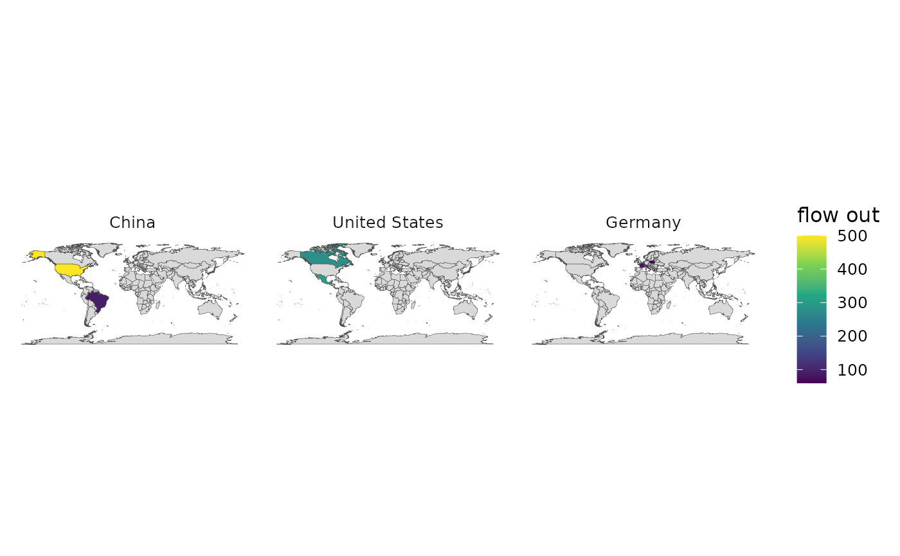

One small map per origin, each showing where that origin's flow goes. The
answer to the arc map's central problem: past a few dozen flows,
flow_map() is a plate of spaghetti and an OD map is legible.
Usage
od_map(
data,
from,
to,
weight = NULL,
origin = "country.name",
origins = 6,
direction = c("out", "in"),
...
)Arguments
- data
An OD table.
- from, to
The origin and destination country columns (unquoted).
- weight
The flow column (unquoted). If omitted, every pair counts as 1.
- origin
How to read
from/to(default"country.name").- origins
Which origins to draw. A character vector of names or codes, or an integer giving how many of the largest to take (default
6).- direction
"out"(default; one panel per origin, showing destinations) or"in"(one panel per destination, showing origins).- ...
Passed to
world_map().
Examples
# \donttest{
od <- data.frame(
from = rep(c("China", "Germany", "USA"), each = 3),
to = c("USA", "Japan", "Brazil", "France", "Italy", "Poland",
"Mexico", "Canada", "Japan"),
value = c(500, 200, 90, 80, 70, 60, 300, 280, 120)
)
if (requireNamespace("maps", quietly = TRUE)) {
od_map(od, from, to, value, origins = 3)
}

# }